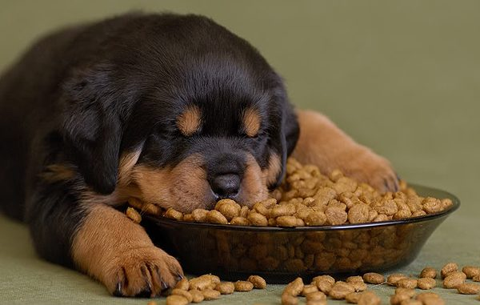
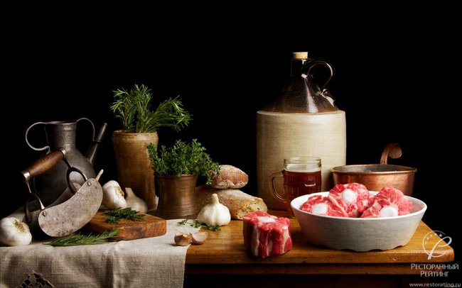
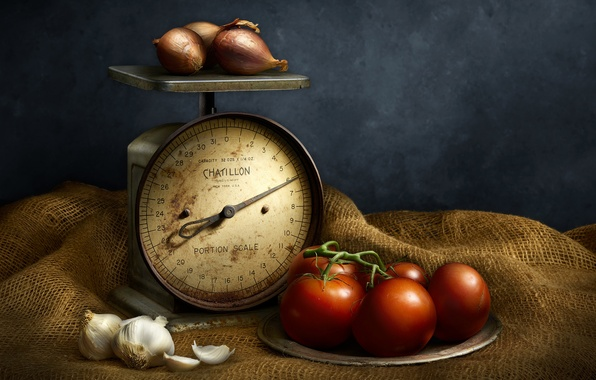
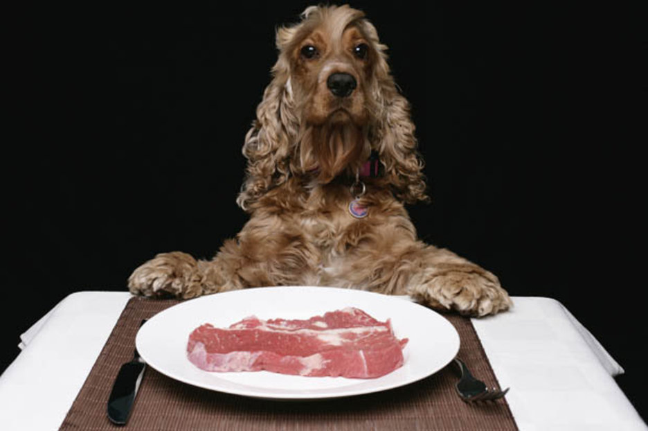

ПОРОДЫ |
УХОД |
КОРМЛЕНИЕ |
ДРЕССИРОВКА |
ЗАБОЛЕВАНИЯ |
О НАС |

Крупные собаки едят больше, но калорийность порции можно намеренно снижать. Если собаке приходится много работать (ездовые, охотничьи породы), а также если собака молодая, пищи потребуется больше. Узнать, хватает ли питомцу еды, просто: положите в миску нормированную порцию, через 15 минут тару можно убирать (даже если пища осталась). У собаки всегда должна быть свежая питьевая вода. Если собака, съев положенную порцию, продолжает лаять и выпрашивать пищу, количество можно немного увеличить.Зачастую взрослых особей кормят дважды: утром и вечером в одно и то же время. Лучше всего давать корм после прогулки – тогда питомец будет есть с аппетитом. 1-2 раза в месяц можно организовывать разгрузочный день, но зачастую собака сама знает, когда ей нужно очистить организм, так что если день-два у питомца нет аппетита – это вполне нормальное явление. Щенков до 3 месяцев кормят через каждые 4 часа по режиму, молодых особей 3-7 месяцев – три раза в день, потом переводят на двухразовое питание. |

Рацион на 2/3 должен состоять из мяса и субпродуктов и на 1/3 из пищи растительного происхождения. Натуральные корма:
Можно кормить собаку готовыми кормами – консервами, полусухим или сухим кормом. Нельзя резко менять один вид корма на другой, давать что-то новое можно только небольшими порциями. Выбирайте качественные корма – только они содержат необходимое количество микроэлементов. |

Для взрослых особей норма потребления натуральной пищи – это 3-4% от веса. Соответственно, высчитываем так: для 15-ти килограммовой собаки потребуется 15х0,04=0,6 кг или 600 грамм пищи (0,04 – это коэффициент, обозначающий процент от массы тела, разделенный на 100%). 2/3 рациона – мясные и молочные продукты и 1/3 – каши и овощи. Стареющим особям количество сокращают до 2,5-3% от массы, щенкам дают больше – до 6%. Что касается корма, крупным особям (30-65 килограмм) на сутки достаточно 400-600 грамм сухого корма премиум-класса. Средним породам (15-30 килограмм) – 300-400 грамм. Представителям маленьких пород (до 15 килограмм) – 150-300 грамм. Если собака участвует в спортивных соревнованиях, охот, то корма можно давать больше. |

Утром лучше давать кашу с овощами и мясом, молочные продукты, старайтесь разнообразить рацион питомца, но не смешивать, к примеру, мясо и рыбу. Вечером предпочтительнее давать только мясо и овощи, каши давайте меньше, ее можно приправлять пару раз в неделю оливковым или подсолнечным маслом. Фрукты собаке не дают, исключение – несладкие яблоки. Нельзя кормить питомца объедками со стола, сладостями, копченостями, вареными костями. Пища должна быть теплой, кашеобразной. Можно давать собачьи галеты и твердое печенье для животных – это полезно для зубов и десен. На обеденном «столе» собаки всегда должна быть миска со свежей водой – это особенно актуально, если вы кормите сухими или полусухими смесями. И стоит ли напоминать, что все продукты должны быть свежими и качественными – только такая пища будет действительно полезной и питательной. |